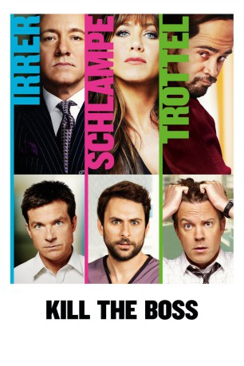
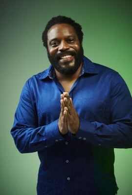

#928 Kill the Boss
Alternativ: Horrible Bosses
 
 IMDB-Wertung: 6.9 / 10
IMDB-Wertung: 6.9 / 10  Metascore: 57
Metascore: 57 
Nick, Kurt und Dale erleben ihre tägliche Plackerei inzwischen als derart unerträglich, dass es für sie nur noch eine Option gibt: Weil sie sich eine Kündigung nicht leisten können, müssen sie ihre Bosse loswerden. Zu diesem Zweck trinken sie sich reichlich Mut an und lassen sich von einem aufdringlichen Ex-Knacki zu einem windigen Komplott überreden. Das Ergebnis ist ein komplizierter, angeblich todsicherer Plan, der sie ein für alle Mal von ihren Arbeitgebern befreien soll. Ein kleines Problem bleibt allerdings ungelöst: Selbst die besten Pläne sind nur so narrensicher wie die Köpfe, die sie sich ausgedacht haben.
Jahr: 2011
Dauer: 98 Minuten
FSK: 16
Land: USA Studio: Warner Bros.Tonspuren: DD5.1 - ,
Untertitel: Deutsch,
Auflösung: 1080p (1920x800) Größe: 7772 MB
Genre: Komödie, Krimi
Regisseur: Seth Gordon
Drehbuch: Michael Markowitz, John Francis Daley, Jonathan Goldstein, Michael Markowitz
Soundtrack: Christopher Lennertz
Darsteller:
 Jason Bateman als Nick Hendricks
Jason Bateman als Nick Hendricks- Steve Wiebe als Thomas, Head of Security
 Kevin Spacey als Dave Harken
Kevin Spacey als Dave Harken Charlie Day als Dale Arbus
Charlie Day als Dale Arbus Lindsay Sloane als Stacy
Lindsay Sloane als Stacy- Michael Albala als Mr. Anderton
 Jennifer Aniston als Dr. Julia Harris, D.D.S.
Jennifer Aniston als Dr. Julia Harris, D.D.S. Jason Sudeikis als Kurt Buckman
Jason Sudeikis als Kurt Buckman- Jennifer Hasty als Kurt's Co-Worker
- Reginald Ballard als Kurt's Co-Worker
- George Back als Kurt's Co-Worker
 Barry Livingston als Kurt's Co-Worker
Barry Livingston als Kurt's Co-Worker Meghan Markle als Jamie
Meghan Markle als Jamie Donald Sutherland als Jack Pellit
Donald Sutherland als Jack Pellit- Celia Finkelstein als Margie Emerman
 Colin Farrell als Bobby Pellit
Colin Farrell als Bobby Pellit John Francis Daley als Carter
John Francis Daley als Carter P.J. Byrne als Kenny Sommerfeld
P.J. Byrne als Kenny Sommerfeld Dave Sheridan als Bartender, Bradford's Bar
Dave Sheridan als Bartender, Bradford's Bar Ioan Gruffudd als Wetwork Man
Ioan Gruffudd als Wetwork Man Brian George als Atmanand
Brian George als Atmanand-  Chad L. Coleman als Bartender, Dive Bar
 Jamie Foxx als Dean 'MF' Jones
Jamie Foxx als Dean 'MF' Jones- Diana Toshiko als Bobby's Girl
 Peter Breitmayer als Pharmacist
Peter Breitmayer als Pharmacist Julie Bowen als Rhonda Harken
Julie Bowen als Rhonda Harken- Isaiah Mustafa als Officer Wilkens
 Wendell Pierce als Detective Hagan
Wendell Pierce als Detective Hagan- Ron White als Detective Samson
- Jimm Giannini als Harken Party Guest
- Andrew Lukich als Cop #1
 Bob Newhart als Lou Sherman
Bob Newhart als Lou Sherman- Seth Gordon als Ralph Peterberg
- Christina Blevins als Cute Girl at Bar , uncredited
- Tony Cronin als Surprise Party Guest , uncredited
- Sarah B. Downey als Bar Patron , uncredited
- Gregory George Frank als Senior Trader , uncredited
- Sean R. Lake als Kurt's Co-Worker , uncredited
- Mariano Mendoza als Bar Patron , uncredited
 Keith Middlebrook als Steinman , uncredited
Keith Middlebrook als Steinman , uncredited- Richard John Reliford als Dive Bar Patron , uncredited
 Joanna Theobalds als Harken Party Guest , uncredited
Joanna Theobalds als Harken Party Guest , uncredited George F. Watson als Laughing Surprise Party Guest of Rhonda Harken , uncredited
George F. Watson als Laughing Surprise Party Guest of Rhonda Harken , uncredited- Thom Williams als Police Officer Arresting Dale , uncredited
- Scott Rosendall als Hank Preston
- Carla Maria Cadotte als Bobby's Girl
- Dawn Frances als Harken Party Guest
- Carrington Bennett als Young MF Jones , uncredited
- Mark Black als Factory Worker , uncredited
- Sinakhone Keodara als Thai Ladyboy Masseuse , uncredited
Datei: X:\2-Dilogie(G-M)\Kill the Boss\Kill the Boss (2011, FSK16, 1920x800).mkv seit 20.04.2015
Festplatte: HD Collection-2(A-Z)-3(A-M)
 Alle Filme aus Gruppe '2-Dilogie(G-M)\Kill the Boss'
Alle Filme aus Gruppe '2-Dilogie(G-M)\Kill the Boss'